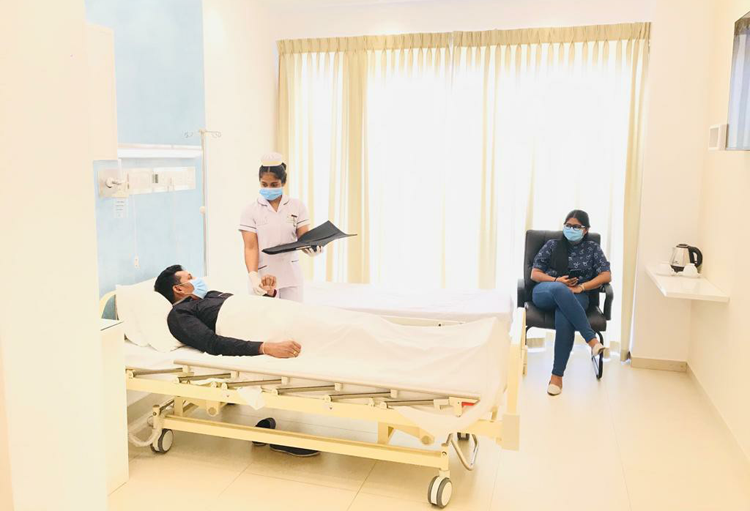

| Colombo City Branch |
|
Our hospital offers specialized services, including 24/7 emergency care, advanced surgical procedures, state-of-the-art diagnostic imaging, a dedicated maternity ward, comprehensive cancer treatment, and a fully equipped intensive care unit (ICU). We prioritize patient safety, comfort, and recovery, delivering top-notch healthcare through our expert medical team. |
+94767965489 |
| Kandy City Branch |
 |
We are provide a vriety of special services to improve patient care ,including patient centered care,specialized medical services,support services,and technology enhanced services. |
+947806785409 |
| Negombo City Branch |
 |
Negombo Hospital offers a comprehensive range of healthcare services to meet the needs of the community. These include emergency care, specialized treatments, and surgical procedures, along with dedicated units for maternity, pediatrics, and chronic disease management. The hospital also provides support services such as rehabilitation and counseling to ensure holistic patient care. With a focus on patient comfort, Negombo Hospital offers amenities like private rooms and personalized care, aiming to deliver high-quality medical services in a compassionate and supportive environment. |
+94763402657 |